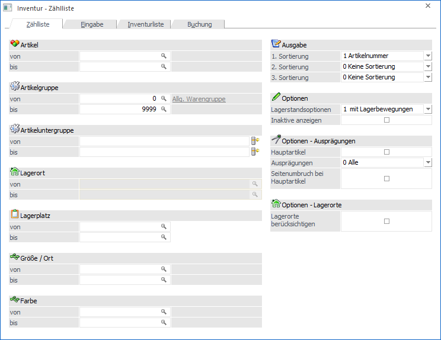
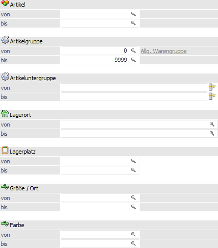
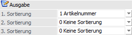
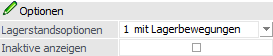
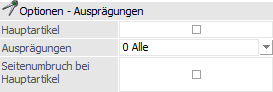
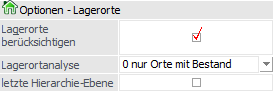
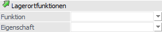
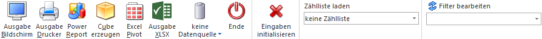

In dem Register "Zählliste" können Zähllisten selektiert und ausgegeben werden. Hierbei sind folgende Punkte zu beachten:
ü Artikeltypen
Die folgenden
Artikeltypen werden in den Inventur nicht berücksichtigt:
ü 1 - Lagerneutraler Artikel
ü 3 - Handelsstückliste (Ausnahme "Fertigungsstückliste")
ü Zählliste
Wird mit einer zuvor
definierten Zählliste gearbeitet
(siehe Button "Zählliste laden"), so stehen nur die Einstellungen "1. Sortierung
/ 2. Sortierung / 3. Sortierung", "Hauptartikel" und "Seitenumbruch bei
Hauptartikel" zur Verfügung.
ü Benutzerspezifische
Speicherung
Die folgenden Einstellungen werden benutzerspezifisch gespeichert
und zum Teil automatisch in die Register Eingabe bzw. Inventurliste übertragen:
ü 1. Sortierung / 2. Sortierung / 3. Sortierung
ü Lagerstandsoptionen
ü Inaktive Anzeigen
ü Hauptartikel
ü Ausprägungen
ü Lagerorte berücksichtigen (nur Register "Inventurliste")

Die Ausgabe der Zählliste kann nach den folgenden Kriterien eingeschränkt bzw. definiert werden:
Selektion

Ø Artikel von / bis
An dieser Stelle können die Artikel für die Zählliste hinterlegt werden.
Ø Artikelgruppe von / bis
In diesen Feldern kann nach den Artikelgruppen eingeschränkt werden, welche in der Zählliste berücksichtigt werden sollen.
Ø Artikeluntergruppe von / bis
An dieser Stelle kann nach den Artikeluntergruppen eingeschränkt werden. Bleiben die Felder leer, so werden alle Artikel aller Artikeluntergruppen in der Zählliste berücksichtigt.
Ø Lagerort von / bis
Für Artikel mit einer Lagerortstruktur können in diesen Feldern eine Selektion auf die Lagerorte vorgenommen werden. Artikel ohne Lagerortstruktur sind von dieser Selektion nicht betroffen.
Hinweis
Eine Selektion an dieser Stelle ist nur möglich, wenn die Option "Lagerorte berücksichtigen" aktiviert wurde.
Ø Lagerplatz von / bis
Hier kann nach dem Lagerplatz selektiert werden.
Ø Ausprägung 1 von / bis (hier "Größe / Ort")
Zusätzlich kann eine Einschränkung auf die Ausprägung 1 vorgenommen werden. Sobald eine Einschränkung auf Ausprägung 1 vorhanden ist, wird die, unter "Artikel" eingegebene Nummer, als Hauptartikelnummer verwendet.
Beispiel
Wenn unter "Artikel von / bis" die Nummer "10018" und unter Ausprägung 1 "K" bis "E" eingegeben wird, werden alle selektierten Ausprägungsartikel des Artikels 10018 in der Zählliste berücksichtigt.
Ø Ausprägung 2 von / bis (hier "Farbe")
Neben Ausprägung 1 kann auch eine Einschränkung auf die Ausprägung 2 vorgenommen werden. Sobald eine Einschränkung auf Ausprägung 2 vorhanden ist, wird die, unter "Artikel" eingegebene Nummer, als Hauptartikelnummer verwendet.
Beispiel
Wenn unter "Artikel von / bis" die Nummer "CZ010" und unter Ausprägung 2 "GR" bis "ROT" eingegeben wird, werden alle selektierten Ausprägungsartikel des Artikels CZ010 in der Zählliste berücksichtigt.
Ausgabe

Ø 1. Sortierung / 2. Sortierung / 3. Sortierung
An dieser Stelle kann die Sortierung der Zählliste definiert werden, wobei eine 3-stufige Sortierung möglich ist. Folgende Kriterien stehen hierbei zur Verfügung:
ü 0 - keine Sortierung (nur bei 2. und 3. Sortierung)
ü 1 - Artikelnummer
ü 2 - Artikelbezeichnung
ü 3 - Artikelgruppe
ü 4 - Lagerplatz
ü 5 - Artikeluntergruppe
ü 6 - Ausprägung 1
ü 7 - Ausprägung 2
ü 8 - Lagerort (nur bei 1. Sortierung)
Hinweis
Die Sortierung "Lagerort" steht nur zur Verfügung, wenn die Option "Lagerorte berücksichtigen" aktiviert wurde. Des Weiteren wird die Sortierung initialisiert, sobald die Option "Lagerorte berücksichtigen" geändert wird.
Sollte mit einem Filter gearbeitet werden, so erfolgt die Sortierung standardmäßig über die im Filter getroffenen Angaben, d.h. die hier getroffene Auswahl wird nur genutzt, wenn im Filter kein Sortierkriterium angegeben wurde.
Optionen

Ø Lagerstandsoptionen
An dieser Stelle kann mit Hilfe einer Auswahlliste definiert werden, welche Artikel - aufgrund des Lagerstands bzw. der Lagerbewegungen - in der Zählliste berücksichtigt werden sollen.
ü 0 - Alle Artikel
Es werden alle
Artikel berücksichtigt.
ü 1 - mit Lagerbewegung
Es werden
alle Artikel berücksichtigt, die im Lager zumindest einmal bewegt wurden. Dabei
wird der Lagerstand nicht berücksichtigt. Jedoch ist hierbei zu beachten, dass
Artikel, die mit derselben Buchungsart und selben Menge zu und wieder abgebucht
werden, dadurch einen Lagerstand von 0 haben, nicht in dieser Einschränkung
ausgegeben / berücksichtigt werden!
ü 2 - mit Lagerstand größer 0
Es
werden alle Artikel berücksichtigt, die einen positiven Lagerstand haben. Dabei
werden Artikel, die zwar Lagerbewegungen aufweisen, aber deren Lagerstand 0 ist,
nicht berücksichtigt.
ü 3 - mit Lagerstand ungleich
0
Hier werden alle Artikel berücksichtigt, deren Lagerstand nicht 0 ist, also
auch Artikel, die einen negativen Lagerstand aufweisen.
ü 4 - mit Lagerstand kleiner
0
Hier werden alle Artikel berücksichtigt, deren Lagerstand kleiner 0
ist.
ü 5 - mit Lagerstand gleich 0 und
Lagerwert ungleich 0
Hier werden alle Artikel berücksichtigt, deren
Lagerstand zwar 0 ist, die jedoch einen Lagerwert aufweisen (egal ob dieser
negativ oder positiv ist)
ü 6 - mit Lagerstand gleich 0
(unabhängig vom Lagerwert)
Hier werden alle Artikel berücksichtigt, deren
Lagerstand 0 ist, unabhängig davon wie hoch der Lagerwert ist.
Ø Inaktive anzeigen
Über diese Option kann definiert werden, ob auch inaktive Artikel ausgegeben werden sollen oder nicht.
Optionen - Ausprägungen

Ø Hauptartikel
Durch Aktivierung der Option "Hauptartikel" wird bei einer Druckausgabe die Hauptartikelzeile von Ausprägungsartikeln zusätzlich mit ausgegeben.
Ø Ausprägungen
An dieser Stelle kann definiert werden, welche Art von Ausprägungen ausgegeben werden soll:
ü 0 - Alle
Es werden alle
Ausprägungen, unabhängig von ihrer Art, ausgegeben.
ü 1 - ohne Zwischenartikel
Es
werden keine Zwischenartikel, sondern nur vollständige Ausprägungen,
ausgegeben.
ü 2 - nur Zwischenartikel
Es
werden nur die Zwischenartikel ausgegeben. Die vollständigen Ausprägungen werden
bei der Ausgabe unterdrückt.
Beispiel - Hauptartikel / Zwischenartikel / vollständige Ausprägung
Bei dem Artikel "10015" handelt es sich um rote Fahrräder, welche mit den Ausprägungen "Größe" (Ausp.1) und "Seriennummer" geführt werden. Die Zwischenartikeln sind in diesem Fall die Kombination "Hauptartikel + Größe", die vollständige Ausprägung "Hauptartikel + Größe + Seriennummer".
Ø Seitenumbruch bei Hauptartikel
Mit Hilfe der Option "Seitenumbruch bei Hauptartikel" wird nach der Ausgabe eines Hauptartikels jeweils ein Seitenumbruch durchgeführt (nur relevant, wenn mit Ausprägungsartikeln - z.B. Größen, Farben, Seriennummern, Chargennummern, etc. - gearbeitet wird).
Optionen - Lagerorte

Ø Lagerorte berücksichtigten
Durch Aktivierung dieser Option stehen folgende Funktionen zur Verfügung:
ü Die Selektion "Lagerort von / bis" kann verwendet werden.
ü Die Sortierung "8 - Lagerort" wird angeboten.
ü Es steht die Einstellungen "Lagerortanalyse", "letzte Hierarchie-Ebene" und "Lagerortfunktionen" zur Verfügung.
ü Auf der Zählliste werden bei Lagerortartikeln (wenn möglich) die Lagerorte ausgegeben.
Ø Lagerortanalyse
An dieser Stelle hinterlegt werden, dass der aktuelle Lagerortbestand bei der Ausgabe der Zählliste berücksichtigt werden soll. Folgende Variante stehen zur Auswahl:
ü 0 - nur Orte mit Bestand
Wird
diese Einstellung gewählt, so werden alle Lagerorte mit Bestand auf der
Zählliste ausgegeben.
ü 1 - alle Orte ausgeben
Bei
Anwahl der Einstellung "1 - alle Orte ausgeben" werden alle Orte ausgegeben,
unabhängig wie der Bestand aktuell lautet. Hierbei werden im Standard alle
Hierarchie-Ebenen berücksichtigt.
Ø letzte Hierarchie-Ebene
Sobald die Option "letzte Hierarchie-Ebene" aktiviert wurde, werden nur noch Orte der letzten Hierarchie-Ebene auf der Zählliste ausgegeben.
Lagerortfunktionen

Sobald die Option "Lagerorte berücksichtigen" aktiviert wurde, kann an dieser Stelle eine Selektion für den Andruck der Lagerorte erfolgen.
Hinweis
Innerhalb der ausgewählten Funktionen bzw. Eigenschaften erfolgt eine ODER-Verknüpfung. Die beiden Elemente "Funktion" und "Eigenschaft" werden hingegen mit einer UND-Verbindung verknüpft.
Beispiele
ü Bei der Funktion wird "Warenausgangslager" und "Wareneingangslager" ausgewählt und die Eigenschaft bleibt leer. Somit werden alle Lagerorte mit Bestand ausgegeben, die entweder Warenausgangslager oder Wareneingangslager oder beides hinterlegt haben.
ü Die Funktion bleibt leer und bei den Eigenschaften wird z.B. "Kühllager" und "Trockenlager" per Checkbox ausgewählt. Somit werden alle Lagerorte mit Bestand ausgegeben, die entweder Kühllager oder Trockenlager oder beides hinterlegt haben.
ü Bei der Funktion wird "Warenausgangslager" und bei den Eigenschaften wird "Kühllager" und "Trockenlager" ausgewählt. Nun werden alle Lagerorte mit Bestand, die entweder Warenausgangslager UND Kühllager oder Warenausgangslager UND Trockenlager hinterlegt haben, ausgegeben.
Ø Funktion
Hier ist die Auswahl einer oder mehrerer Lagerortfunktionen per Auswahlbox möglich. Bei Auswahl mehrerer Funktionen werden diese mit der ODER-Verknüpfung angewendet.
Ø Eigenschaft
Hier ist die Auswahl einer oder mehrerer Eigenschaften per Auswahlbox möglich. Bei Auswahl mehrerer Eigenschaften werden diese mit der ODER-Verknüpfung angewendet.
Zähllisteninfo
Sobald eine zuvor angelegte Zählliste aus der Auswahlliste "Zählliste laden" (siehe Buttons) gewählt wurde, wird ein Informationsbereich zur Zählliste angezeigt.
Ø Bestandsoptionen
In diesem Feld wird angezeigt, welche Lagerorte grundsätzlich in der Zählliste berücksichtigt werden sollen.
Ø Artikelanzeige
An dieser Stelle wird angezeigt, ob Artikel mit bzw. ohne Lagerortstruktur berücksichtigt werden.
Ø manuelle Ergänzung zulassen
An dieser Stelle wird angezeigt, ob die Zählliste während der Erfassung um weitere Artikel bzw. Lagerorte ergänzt werden darf.
Buttons

Ø Ausgabe Bildschirm
Mit Hilfe des Buttons "Ausgabe Bildschirm" oder der Taste F5 wird die Zählliste am Bildschirm ausgegeben.
Ø Ausgabe Drucker
Durch Anwahl des Buttons "Ausgabe Drucker" wird die Zählliste am Drucker ausgegeben.
Ø Power Report
Durch Drücken des Buttons "Power Report" wird die Zählliste auf Basis von Cube-Daten grafisch dargestellt. Die Ausgabe ist individuell anpassbar und erfolgt in der Form von "Widgets", die unterschiedlichste Darstellungen ermöglichen.
Ø Cube erzeugen
Wenn die Ausgabe "Cube erzeugen" gewählt wird (nur möglich wenn auch die entsprechende Lizenz dafür vorhanden ist), dann wird die Zählliste im "Olap Viewer" angezeigt, wo es dann die Möglichkeit gibt, die Daten nach verschiedenen Gesichtspunkten auszuwerten.
Ø Excel Pivot
Durch Anwahl des Buttons "Excel Pivot" werden die Daten der Zählliste in Form einer Pivot Ausgabe in Microsoft Excel (2007 oder höher) angezeigt.
Ø Ausgabe XLSX
Mit Hilfe des Buttons "Ausgabe XLSX" werden die ausgewerteten Zeilen an Microsoft Excel übergeben.
Ø Datenquelle
Mit Hilfe dieser Auswahl kann definiert werden, ob und wie eine Datenquelle (d.h. ein Snapshot oder eine MasterView) verwendet werden soll.
ü Keine Datenquelle
Bei Auswahl
von "keine Datenquelle" wird keine zuvor angelegte Datenquelle genutzt. D.h. die
Daten werden von der WinLine "live" ermittelt und in der gewünschten Form
ausgegeben.
Hinweis
Da die BI-Ausgabe (z.B. Cube oder Power Report) immer eine Datenquelle benötigt, wird im Hintergrund eine temporäre Datenquelle (Snapshot) gebildet.
ü Datenquelle
erstellen/aktualisieren
Die Daten werden zur Laufzeit ermittelt und an einen
zu definierenden Snapshot übergeben. Nach dem Füllen der Datenquelle wird die
gewünschte Ausgabevariante über die Datenquelle erzeugt. Dieser Vorgang kann mit
einer Zeitverzögerung verbunden sein, da die Daten zusätzlich gespeichert werden
müssen.
ü Datenquelle verwenden
Bei der
Verwendung eines Snapshots werden die Daten direkt aus der Datenquelle gelesen,
d.h. die für die Ausgabe benötigten Daten können ohne Verzögerung in der
gewünschten Variante ausgegeben werden.
Wird hingegen eine MasterView
gewählt, so werden die Daten für die Ausgabe "live" ermittelt, wobei diese so
aktuell sind wie die zugrunde liegenden Datenquellen.
Hinweis
Der Button "Datenquelle verwenden" wird nur angeboten, wenn für diesen Bereich (bezogen auf den aktuellen Benutzer / Mandanten) zumindest eine private oder öffentliche Datenquelle existiert. Des Weiteren stehen die Ausgabevarianten "Ausgabe Bildschirm" und "Ausgabe Drucker" nicht zur Verfügung.
Hinweis
Weitere Informationen zum Thema "Datenquellen" entnehmen Sie bitte dem Kapitel "Die Datenquelle".
Ø Ende
Durch Drücken des Buttons "Ende" bzw. der Taste ESC wird das Fenster geschlossen.
Ø Eingaben initialisieren
Mit Hilfe des Buttons "Eingaben initialisieren" bzw. der Taste F4 werden alle vorgenommenen Selektionen entfernt.
Ø Zählliste laden
Mit Hilfe der Auswahlliste "Zählliste laden" kann eine zuvor angelegte Zählliste geladen werden. Hierdurch werden alle Selektionsfelder automatisch auf die Selektion gemäß Zählliste gesetzt und sind nicht mehr editierbar.
Ø Filter bearbeiten
Durch Anklicken des Buttons "Filter bearbeiten" kann die Auswertung nach frei definierbaren Kriterien eingeschränkt und sortiert werden.
Hinweis
Der Filter steht nicht zur Verfügung, wenn mit einer Zählliste gearbeitet wird!